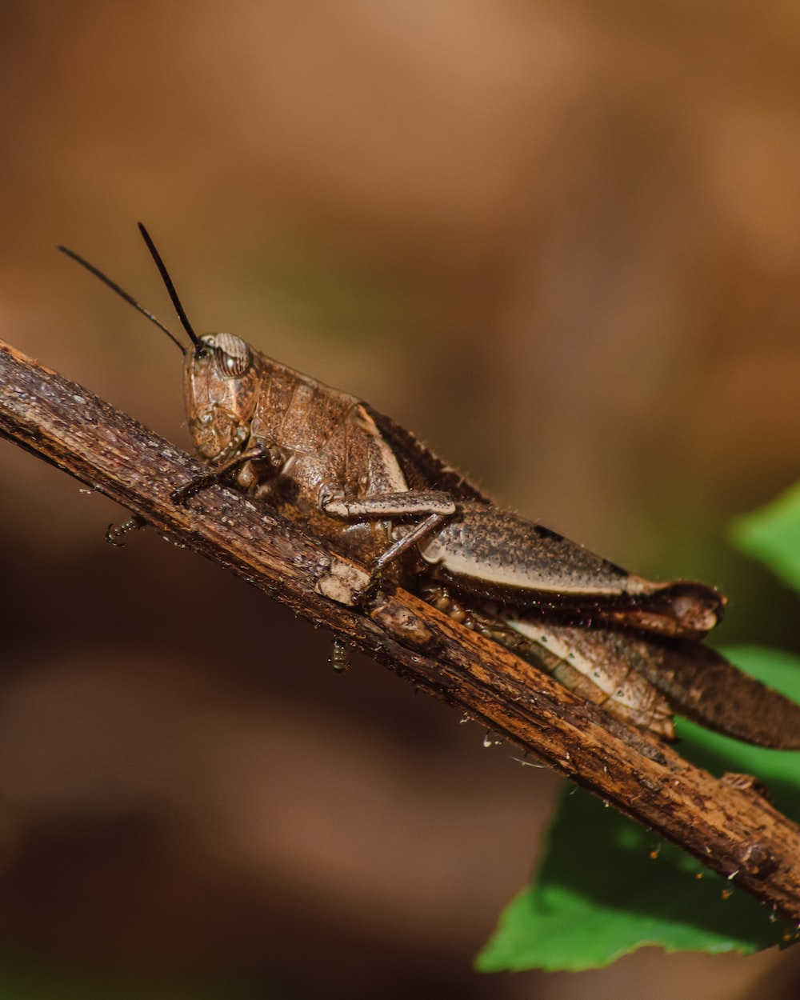
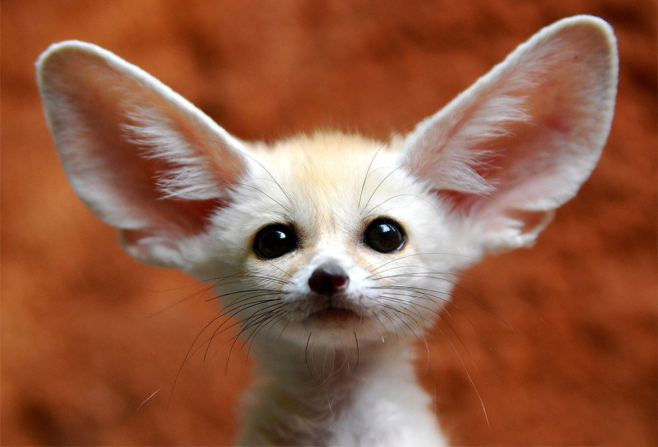

Los animales exóticos pueden ser aves, mamíferos, reptiles, peces o insectos que tienen cualidades únicas o extrañas que los convierten en ejemplares distintos y especiales. También se conocen como animales exóticos a aquellas especies que, por algún motivo, terminan viviendo alejadas de su hábitat natural.
La palabra “exótico” significa que algo es distinto o lejano a lo que se toma como referencia, algo original y totalmente diferente. La variedad de seres vivos que hay en la Tierra es impresionante y algunos animales nos impactarán aún más que otros.
ALGUNOS ANIMALES EXOTICOS
PATO MANDARIN
DRAGONES DE MAR
SALTAMONTES ROSA
ZORRO FÉNEC
El pato mandarín macho es un verdadero espectáculo para la vista, posee unos colores vibrantes e increíbles. Sus plumas se presentan en tonos fucsia, verde, azul, marrón, crema y naranja
El dragón de mar es un pez muy particular que está emparentado con los caballitos de mar. Proviene de Australia y su aspecto distintivo es que tiene prolongaciones por todo el cuerpo se parecen a pequeñas hojas. A simple vista parece un alga flotante.
Los saltamontes marrones, verdes, y hasta blancos, son bastante comunes, pero el saltamontes rosa destaca entre todos ellos.
El zorro de Fénec o feneco es un mamífero que vive en el Sahara y Arabia. Tienen unas orejas puntiagudas que les sirven de ventilación pero que al mismo tiempo los hace únicos y atractivos>

